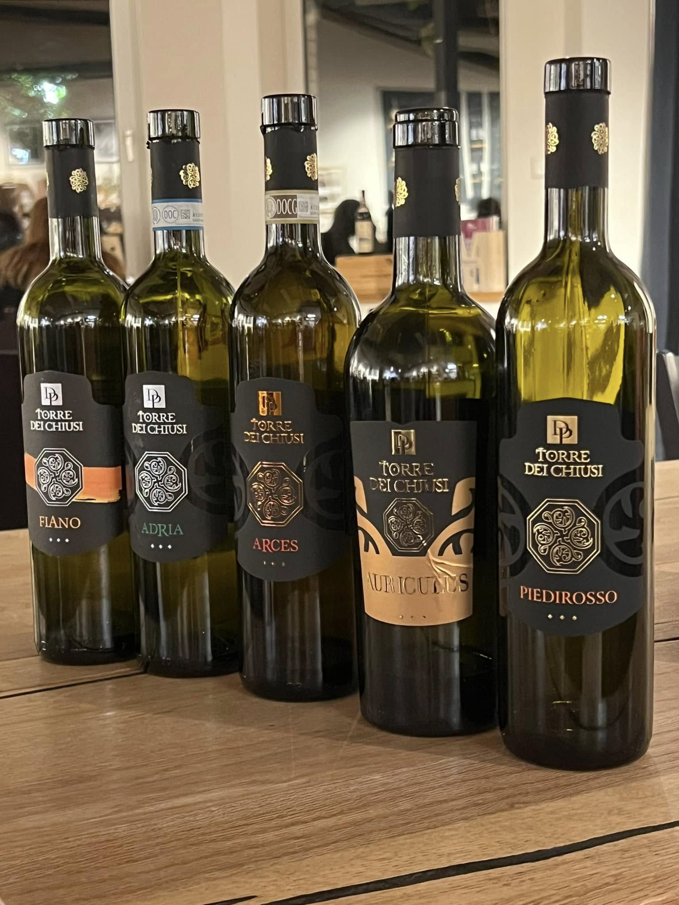

Weißwein · Gladbeck
Von mineralischen Rieslinge bis zu cremigen Chardonnays –
unsere Weißweine begeistern Einsteiger wie Kenner.

Weißwein-Expertise
Weißweine sind die Entdecker unter den Weinen. Sie spiegeln den Boden, das Klima, die Sorgfalt des Winzers mit einer Klarheit wider, die kein anderer Weinstil erreicht.
Ein Riesling von der Mosel schmeckt wie flüssiger Schiefer. Ein burgundischer Chardonnay wie sonnengewärmte Butter auf warmem Brot. Lassen Sie sich von uns durch diese aromatische Vielfalt führen.
Weißweine verkostenWir helfen Ihnen
Ob zum Fisch, zum Käse, für den Sommerabend oder als Geschenk – wir empfehlen Ihnen den passenden Wein für jeden Anlass.
Weißwein-Spezialist im Ruhrgebiet
EntdeckerWeine in Gladbeck ist Ihr Fachgeschäft für Weißwein im nördlichen Ruhrgebiet. Von großem Mosel-Riesling über eleganten Weißburgunder aus Baden bis zu frischem Sauvignon Blanc aus der Loire – unser Sortiment spiegelt die ganze Vielfalt weißer Rebsorten wider. Kunden aus Gelsenkirchen, Bottrop, Recklinghausen und Herne schätzen besonders die ehrliche, unvoreingenommene Beratung.
Keine Angst vor Fachsimpelei: Wir erklären Ihnen, warum ein Grüner Veltliner aus der Wachau so spannend ist und welcher Riesling am besten zum Fischgericht passt – auf Augenhöhe, ohne Schönreden. Besuchen Sie uns in der Marktstraße 6 in Gladbeck.
EntdeckerWeine · Marktstraße 6 · 45964 Gladbeck · Mi–Fr 11–23 · Sa 10–15 Uhr